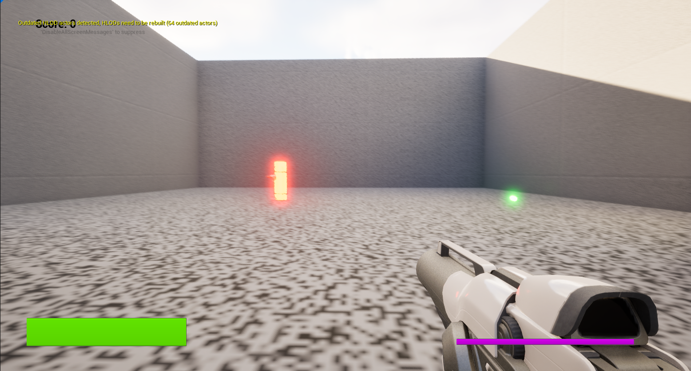

C++ Unreal Engine Prototype (Oct - Nov 2024)

For my first semester in my second year, I needed to create a prototype of mechanics utilising C++ inside Unreal Engine 5. As this was my first time trying to use C++ inside Unreal Engine, I had to learn how classes interact with each other and what I am limited to within C++ classes compared to Blueprint. I started off with a framework based around a first person character movement and with this, I chose to make a first person shooter with a stamina meter and enemy NPCs.
Key Mechanics
Enemy NPCs
The enemies were created using Unreal Engine's Behavior Tree and making my own tasks, services, and decorators as classes inside the solution. They roam around various points along a spline and can see the player with the Pawn Sensing component. They also drop small objects after dying which can be picked up by the player to regenerate health and earn a score.
Stamina + Health
The player has a health component and stamina component which hold values and functions to react to losing and gaining health/stamina. When affected, they broadcast delegates to trigger events on bound classes. These delegates are linked to updating the UI within the player controller. When the player is standing still, they will regenerate stamina all the way up to its maximum. When walking, they won't regenerate or deteriorate, and when sprinting, stamina will deteriorate fast. This mechanic was quite difficult to manage as it works with timers and cancelling timers before they are called again.
Sprint
This mechanics was the first that I worked on and I first prototyped it inside blueprint to make sure that I could get it working as I have not worked with a sprint mechanic before. This involved being able to increase the movement speed, getting the FOV to update gradually as opposed to immediately jumping to another value. This involved me working with timers to first get the FOV to increment and decrement at a set rate. I also needed to modify how the original framework's movement system worked so that I could add the sprint action and be able to cancel it when the player stopped moving or lost stamina.